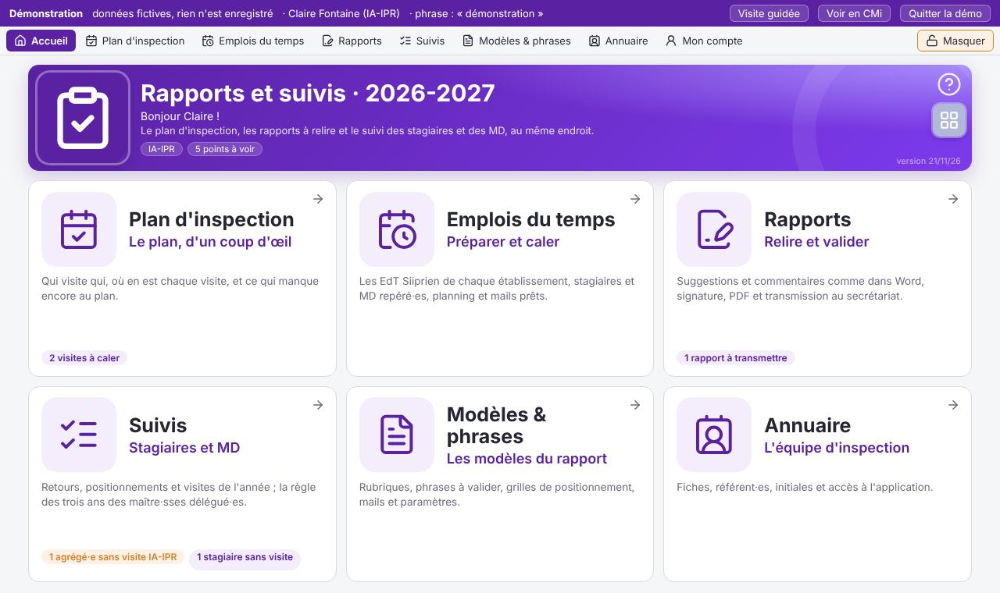
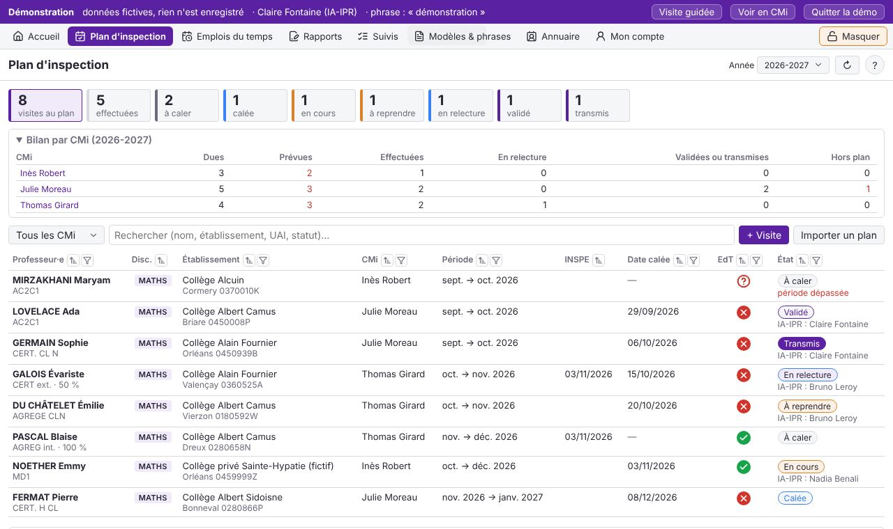
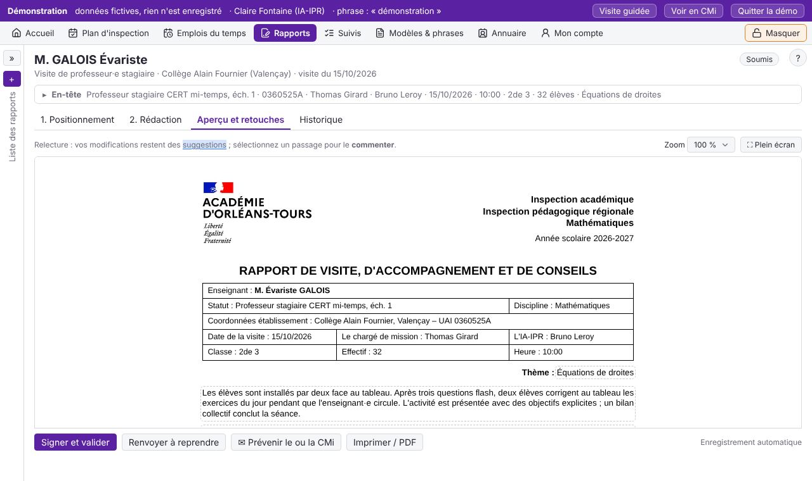
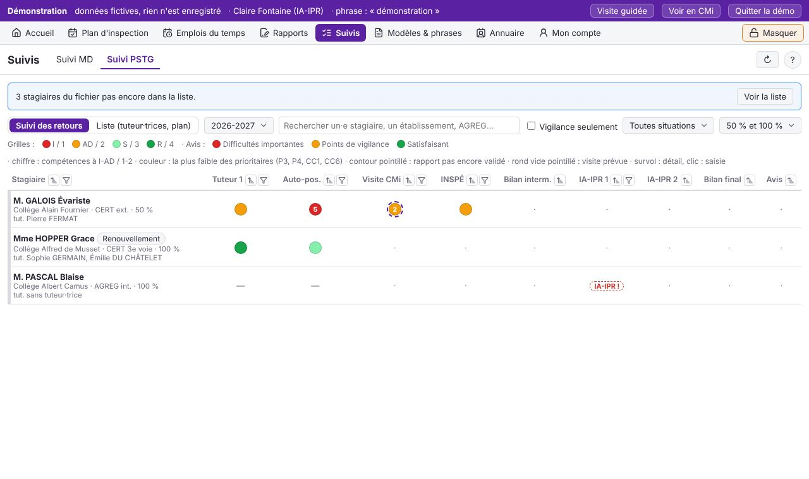

Votre application
Visite guidée sur données fictives
Choisissez un rôle : l'application s'ouvre avec une équipe, des professeur·es et des rapports inventés. À la première ouverture de chaque écran, une fenêtre « Comment ça marche » vous guide.
Bon à savoir. Tout est modifiable pendant la visite, mais rien n'est enregistré : recharger la page rend les données d'origine. Un bandeau en haut permet de changer de rôle, de relancer la visite guidée ou de quitter. Les données chiffrées sont révélées d'office (phrase de la démonstration : « démonstration »).
L'application en un coup d'œil
Captures de la démonstration (données fictives). Cliquez pour agrandir.




Ce que fait l'application
Une seule page Grist, sans l'interface de Grist : un menu pour passer d'un écran à l'autre. Chacun·e voit et modifie ce que son rôle permet.
Le circuit d'un rapport
Le ou la CMi rédige dans des cadres guidés (consignes, phrases types, positionnement des stagiaires et des MD), signe et soumet. L'IA-IPR relit comme dans un traitement de texte (suggestions, commentaires ancrés), renvoie ou signe et valide, puis transmet le PDF au secrétariat.
L'installer dans Grist
Une dizaine de minutes, sans connaissance technique : un assistant vous guide à la première ouverture.
- Télécharger le modèle
grist-rapports-app-modele.grist : tables, règles d'accès, page de l'application et données d'exemple inventées.
- L'importer dans Grist
Sur grist.numerique.gouv.fr : Ajouter → Importer un document → ce fichier.
- Ouvrir la page App
Si Grist le demande, accepter l'accès complet du widget.
- Suivre l'assistant « Premier démarrage »
Votre compte, l'académie, la discipline, les établissements (téléchargés en open data), les données d'exemple, la phrase de chiffrement, le fichier Siiprien des professeur·es, les collègues.
- Partager avec l'équipe
Bouton Partager de Grist, puis Annuaire → « Donner accès à l'application ». Le lien de la page App et la phrase de chiffrement se transmettent par deux canaux différents.
Données et sécurité
Dans le document Grist de votre équipe, sur l'instance de votre choix ; l'application n'a ni serveur ni base à elle.
Textes des rapports, commentaires, signatures et noms des emplois du temps sont chiffrés avec une phrase secrète : ni Grist ni l'hébergeur ne les lisent.
Règles d'accès de Grist : un·e CMi ne modifie que ses rapports tant qu'ils ne sont pas validés ; chacun·e ne pose que sa signature.
Code public sur la forge des communs numériques éducatifs ; données d'établissements issues de l'open data du ministère.